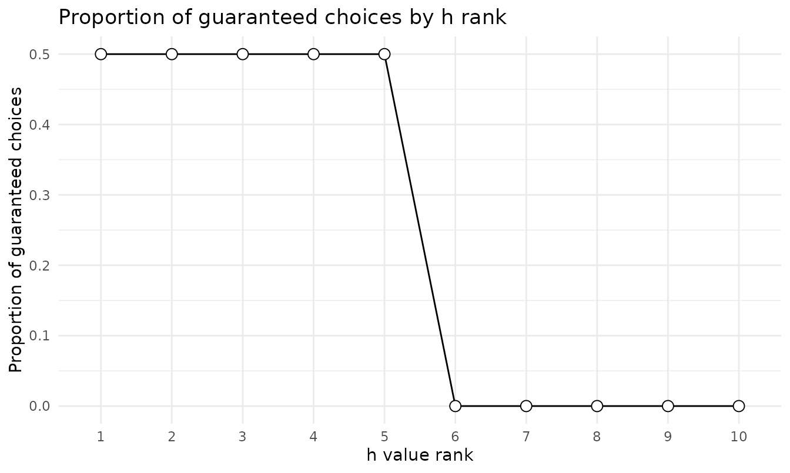

Scoring the Probability Discounting Questionnaire (PDQ)
Brent Kaplan
Source:vignettes/pdq-scoring.Rmd
pdq-scoring.RmdThe 30-item Probability Discounting Questionnaire (PDQ; Madden, Petry, & Johnson, 2009) measures preference between smaller guaranteed rewards and larger probabilistic rewards. Items form three 10-question blocks – $20 for sure vs. a chance of $80, $40 vs. $100, and $40 vs. $60 – each an ascending ladder of discount rates (h) at indifference under the hyperbolic odds-against model V = A / (1 + h * theta), where theta = (1 - p) / p (Rachlin, Raineri, & Cross, 1991).
Scoring
score_pdq() expects long-form data with
subjectid, questionid (1-30, the administered
order), and response (0 = guaranteed, 1 = risky). Each
block is scored independently by the same consistency-maximization
algorithm used for the MCQ; the implementation reproduces the Gray et
al. (2016) scoring syntax for every possible response pattern.
score_pdq(pdq)
#> subjectid overall_h block1_h block2_h block3_h mean_h geomean_h
#> 1 1 1.224745 1.215571 1.224745 1.233988 1.224768 1.224745
#> 2 2 0.329268 0.333333 0.329268 0.333333 0.331978 0.331973
#> overall_consistency block1_consistency block2_consistency block3_consistency
#> 1 1 1 1 1
#> 2 1 1 1 1
#> composite_consistency overall_proportion block1_proportion block2_proportion
#> 1 1 0.5 0.5 0.5
#> 2 1 1.0 1.0 1.0
#> block3_proportion impute_method
#> 1 0.5 none
#> 2 1.0 noneblock1_h-block3_h are the per-block
discount rates; mean_h is the arithmetic mean recommended
by Gray et al. (2016) and geomean_h the geometric mean.
block*_proportion is the risky choice ratio (RCR).
overall_h is a beezdiscounting extension – the published
scoring has no overall 30-item ladder, so overall_h pools
all 30 items into a single ascending ladder and applies the same
consistency-maximization (see ?score_pdq for the pooling
conventions); prefer mean_h when following the published
scoring exactly. Gray et al. recommend excluding subjects below 80%
consistency on any block.
Proportions by h rank
prop_sc() reports the proportion choosing the
guaranteed reward at each h rank – the complement of the risky
choice ratio above.
prop_sc(pdq)
#> # A tibble: 10 × 2
#> h_rank prop_sc
#> <int> <dbl>
#> 1 1 0.5
#> 2 2 0.5
#> 3 3 0.5
#> 4 4 0.5
#> 5 5 0.5
#> 6 6 0
#> 7 7 0
#> 8 8 0
#> 9 9 0
#> 10 10 0
plot(prop_sc(pdq))
Trial-level modeling bridge
pdq_to_choice() reshapes responses into one row per
choice with the item design attached – including theta, the
odds against winning – ready for trial-level modeling of probability
discounting:
head(pdq_to_choice(pdq))
#> # A tibble: 6 × 6
#> id sc_amount lu_amount prob theta choice
#> <chr> <dbl> <dbl> <dbl> <dbl> <dbl>
#> 1 1 20 80 0.1 9 0
#> 2 1 20 80 0.13 6.69 0
#> 3 1 20 80 0.17 4.88 0
#> 4 1 20 80 0.2 4 0
#> 5 1 20 80 0.25 3 0
#> 6 1 20 80 0.33 2.03 1The item design
get_lookup_table(instrument = "pdq")
#> questionid block h_rank overall_rank sc_amount lu_amount prob theta
#> 1 1 1 1 2 20 80 0.10 9.00000000
#> 2 2 1 2 6 20 80 0.13 6.69230769
#> 3 3 1 3 9 20 80 0.17 4.88235294
#> 4 4 1 4 11 20 80 0.20 4.00000000
#> 5 5 1 5 13 20 80 0.25 3.00000000
#> 6 6 1 6 16 20 80 0.33 2.03030303
#> 7 7 1 7 19 20 80 0.50 1.00000000
#> 8 8 1 8 24 20 80 0.67 0.49253731
#> 9 9 1 9 25 20 80 0.75 0.33333333
#> 10 10 1 10 28 20 80 0.83 0.20481928
#> 11 11 2 1 1 40 100 0.18 4.55555556
#> 12 12 2 2 4 40 100 0.22 3.54545455
#> 13 13 2 3 8 40 100 0.29 2.44827586
#> 14 14 2 4 10 40 100 0.33 2.03030303
#> 15 15 2 5 14 40 100 0.40 1.50000000
#> 16 16 2 6 17 40 100 0.50 1.00000000
#> 17 17 2 7 20 40 100 0.67 0.49253731
#> 18 18 2 8 23 40 100 0.80 0.25000000
#> 19 19 2 9 26 40 100 0.86 0.16279070
#> 20 20 2 10 29 40 100 0.91 0.09890110
#> 21 21 3 1 3 40 60 0.40 1.50000000
#> 22 22 3 2 5 40 60 0.46 1.17391304
#> 23 23 3 3 7 40 60 0.55 0.81818182
#> 24 24 3 4 12 40 60 0.60 0.66666667
#> 25 25 3 5 15 40 60 0.67 0.49253731
#> 26 26 3 6 18 40 60 0.75 0.33333333
#> 27 27 3 7 21 40 60 0.86 0.16279070
#> 28 28 3 8 22 40 60 0.92 0.08695652
#> 29 29 3 9 27 40 60 0.95 0.05263158
#> 30 30 3 10 30 40 60 0.97 0.03092784
#> hindiff
#> 1 0.3333333
#> 2 0.4482759
#> 3 0.6144578
#> 4 0.7500000
#> 5 1.0000000
#> 6 1.4776119
#> 7 3.0000000
#> 8 6.0909091
#> 9 9.0000000
#> 10 14.6470588
#> 11 0.3292683
#> 12 0.4230769
#> 13 0.6126761
#> 14 0.7388060
#> 15 1.0000000
#> 16 1.5000000
#> 17 3.0454545
#> 18 6.0000000
#> 19 9.2142857
#> 20 15.1666667
#> 21 0.3333333
#> 22 0.4259259
#> 23 0.6111111
#> 24 0.7500000
#> 25 1.0151515
#> 26 1.5000000
#> 27 3.0714286
#> 28 5.7500000
#> 29 9.5000000
#> 30 16.1666667References
Gray, J. C., Amlung, M. T., Palmer, A. A., & MacKillop, J. (2016). Syntax for calculation of discounting indices from the monetary choice questionnaire and probability discounting questionnaire. Journal of the Experimental Analysis of Behavior, 106(2), 156-163.
Madden, G. J., Petry, N. M., & Johnson, P. S. (2009). Pathological gamblers discount probabilistic rewards less steeply than matched controls. Experimental and Clinical Psychopharmacology, 17(5), 283-290.
Rachlin, H., Raineri, A., & Cross, D. (1991). Subjective probability and delay. Journal of the Experimental Analysis of Behavior, 55(2), 233-244.